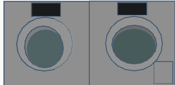
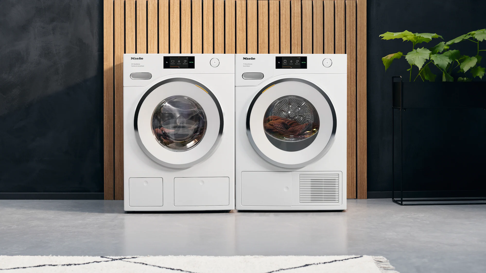
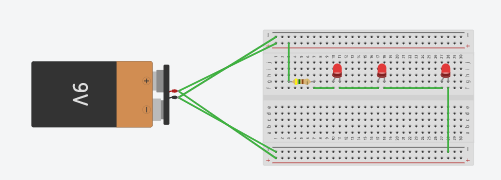
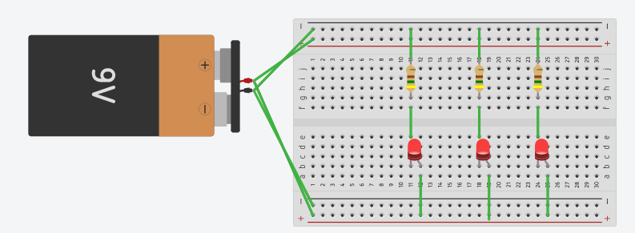
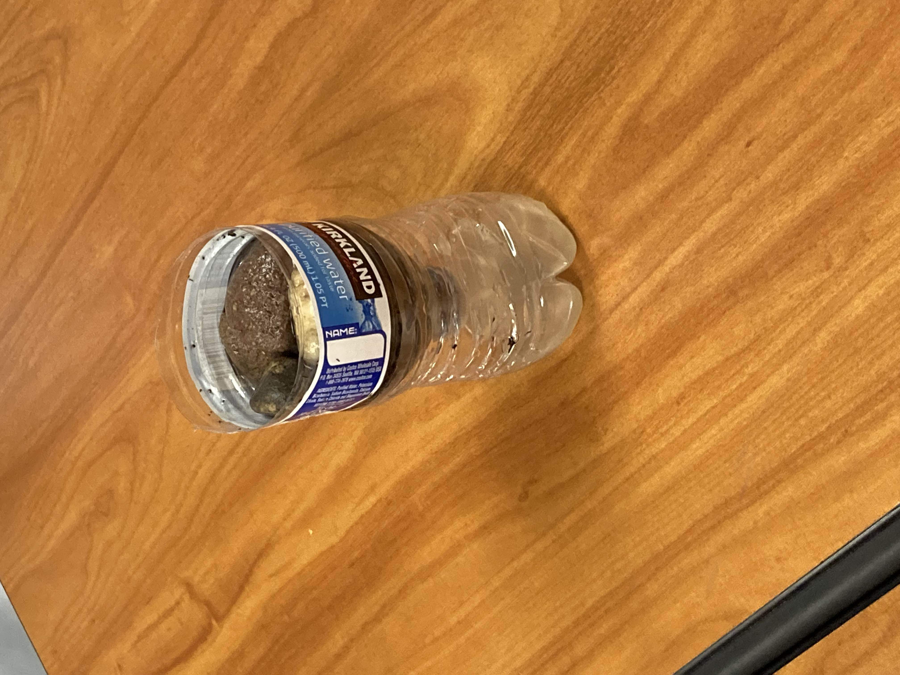
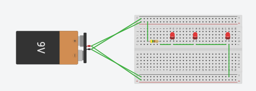
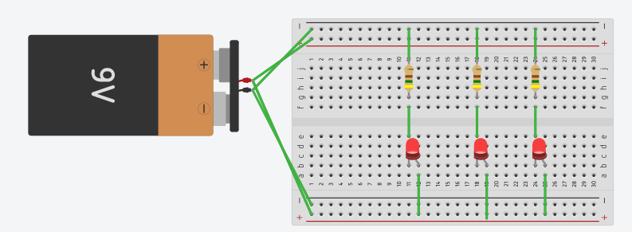
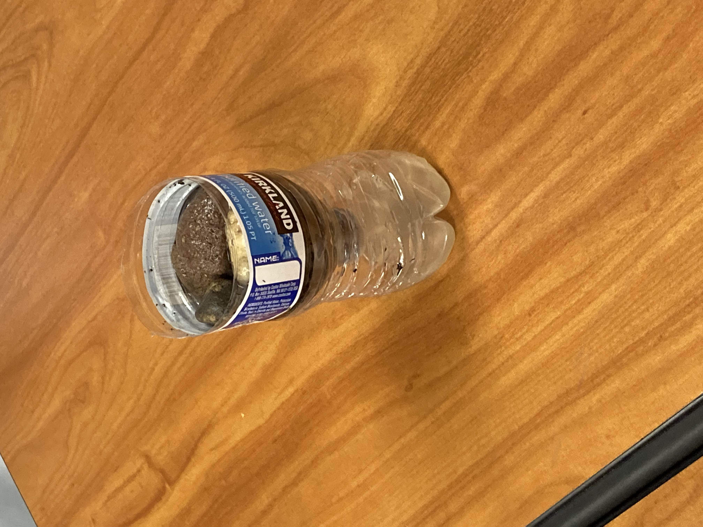

Welcome
9/2/22 1st blog I learned how to use tinkercad. I'm working on making the goldberg machine in tinkercad. A goldberg machine is a machine that uses chain reactions. You should always have protective goggles, masks, and other protective gear in the workshop. You should also never bring food in the workshop. I had fun making a washing machine in tinkercad.   9/8/22 2nd blog Finished goldberg machine in tinkercad. We are still working on our group project for the goldberg machine. I'm having fun contributing to our group goldberg machine. 9/16/22 3rd blog We finished cutting out the cardboard and made a structure for the goldberg machine. I had fun having the ship competition.

10/7/22 6th blog I dissected a laptop it was pretty confusing because
most of the parts were missing and the cpu was broken and fell out,so it wasn't our fault.
We finished coloring and labeling the components of the laptop.
The challange was finding how many doors there were and I think our numbers
around 5000 doors. It was fun roaming out of class and estimating how many doors there are at school.
I learned Ram stands for Random access memory. To me I think the cpu is one of the most important
components of a laptop because it is basically the brain of the computer.
 10/14/22 7th blog
I learned that drag, thrust, lift, and gravity influences how an aircraft flies.
The drag slows the aircraft down. The thrust determines the direction of flight. The lift allows the airplane to go up.
The gravity is the force that pulls the plane down.
On tinkercad we are working on our bottle rocket design.
We haven't completed that much.
The airplane thing was fun.
10/14/22 7th blog
I learned that drag, thrust, lift, and gravity influences how an aircraft flies.
The drag slows the aircraft down. The thrust determines the direction of flight. The lift allows the airplane to go up.
The gravity is the force that pulls the plane down.
On tinkercad we are working on our bottle rocket design.
We haven't completed that much.
The airplane thing was fun.
 10/24/22 8th blog
we finished our bottle rocket design and it was fun.
we finished our design on tinkercad. when we launched our rocket
with coke and mentos it didn't launch, but when we used pressurized
water, it worked a lot better. we finished the bom. WHen we launched our rocket
it was fun and intense.
10/24/22 8th blog
we finished our bottle rocket design and it was fun.
we finished our design on tinkercad. when we launched our rocket
with coke and mentos it didn't launch, but when we used pressurized
water, it worked a lot better. we finished the bom. WHen we launched our rocket
it was fun and intense.

 Pdf
11/4/22 9th blog
We built a water filter with cotton balls, sand, pebbles, and larger
rocks. It was fun and our water was pretty clean. We learned about V=IR,
V/R=I,and R=V/I. R stands for resistance ohm, I stands for current ampere, and
V stands for volts. I made bread circuits too.



Pdf
11/4/22 9th blog
We built a water filter with cotton balls, sand, pebbles, and larger
rocks. It was fun and our water was pretty clean. We learned about V=IR,
V/R=I,and R=V/I. R stands for resistance ohm, I stands for current ampere, and
V stands for volts. I made bread circuits too.


